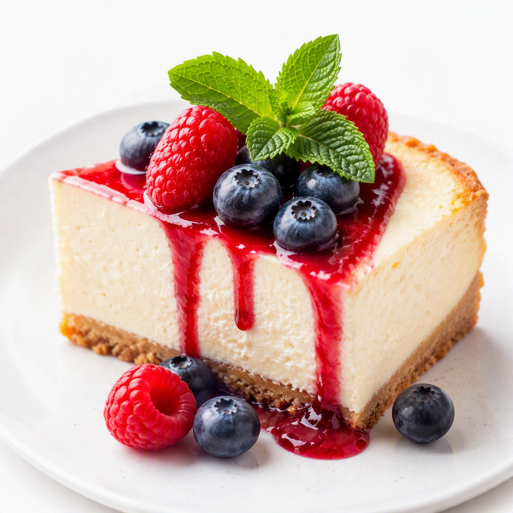
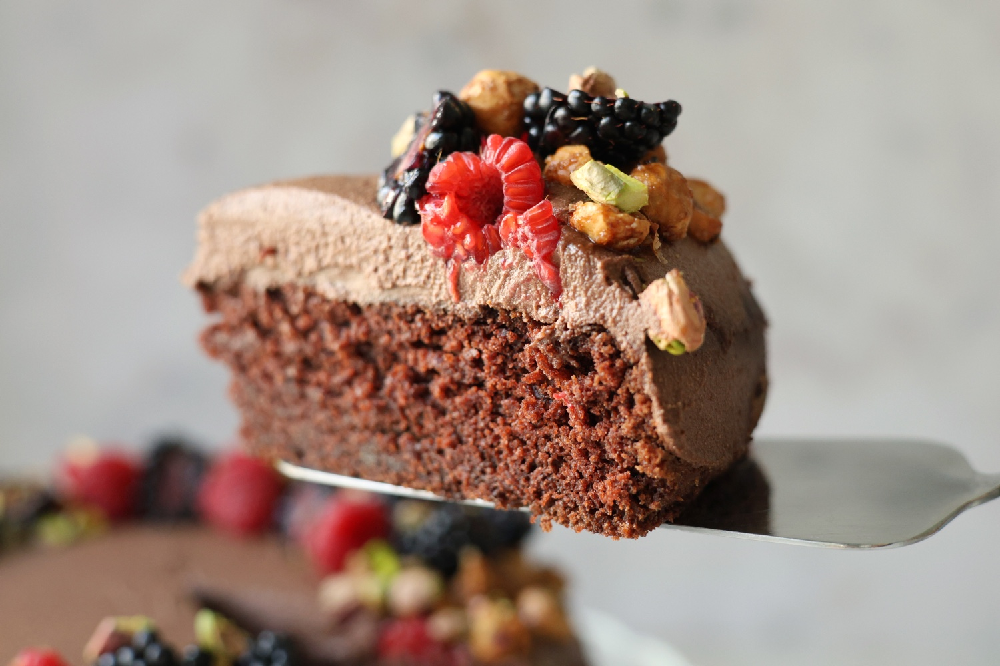
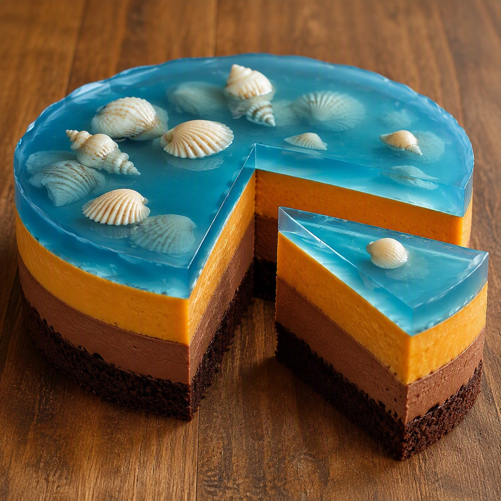

«Вкусняшки от Малинина»
Торты КЕТО на заказ в Мерсине
В моих тортах нет добавленного сахара, злаков и фитина — я использую фермерские продукты: цельное сливочное, оливковое масло холодного отжима и яйца. Качественную миндальную и кокосовую муку, семена льна и чиа, свежие сезонные ягоды, фрукты и натуральные подсластители. Всё это даёт богатство вкуса, пользу витаминов, клетчатки и полифенолов.
Только натуральные подсластители: стевия и монк фрукт.
Помогают контролировать аппетит и соблюдать низкоуглеводное питание без ощущения строгих ограничений.
О пользе кето-тортов — «Вкусняшки от Малинина»Характеристики и состав указаны для стандартного торта диаметром 24 см


Ø 24 см | высота 5 см | ~1,6–1,7 кг
Состав: Натуральное какао, кэроб / горький шоколад, сливочное масло, оливковое масло, яйца, тыквенная и кокосовая мука, натуральные подсластители.
КБЖУ на весь торт:
Калории: ~6500 ккал
Белки: ~130 г
Жиры: ~615 г
Углеводы (чистые): ~65 г

Ø 24 см | высота 8 см | ~2 кг
Состав: Тыква, какао, сливочное масло, яйца, миндальная и кокосовая мука, кремовые прослойки, желейная прослойка, натуральные подсластители.
КБЖУ на весь торт:
Калории: 2700–3100 ккал
Белки: 90–100 г
Жиры: 230–250 г
Углеводы (чистые): 45–60 г